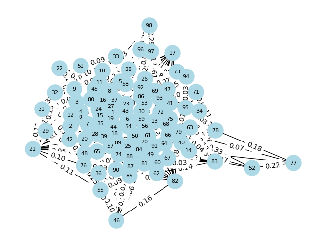
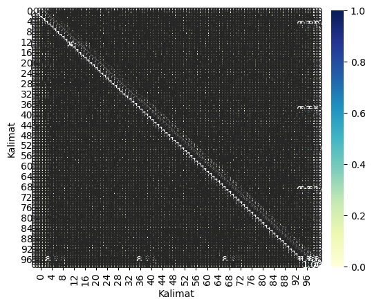

!pip install beautifulsoup4Requirement already satisfied: beautifulsoup4 in /usr/local/lib/python3.10/dist-packages (4.11.2)
Requirement already satisfied: soupsieve>1.2 in /usr/local/lib/python3.10/dist-packages (from beautifulsoup4) (2.5)!pip install beautifulsoup4Requirement already satisfied: beautifulsoup4 in /usr/local/lib/python3.10/dist-packages (4.11.2)
Requirement already satisfied: soupsieve>1.2 in /usr/local/lib/python3.10/dist-packages (from beautifulsoup4) (2.5)import requests
from bs4 import BeautifulSoup
from datetime import datetime
import csv
hades = {'user-agent': 'Mozilla/5.0 (Windows NT 10.0; Win64; x64) AppleWebKit/537.36 (KHTML, like Gecko) Chrome/106.0.0.0 Safari/537.36'}Pada proses crawling ini diambil berita melalui website detik.com dengan menggunakan kata kunci “Pemanasan Global”
def scrape_detik(hal, requests):
a = 1
# Membuka file CSV untuk menulis hasil scraping
with open('hasil_scraping.csv', 'w', newline='', encoding='utf-8') as csvfile:
fieldnames = ['Judul', 'Waktu', 'Link', 'Content']
writer = csv.DictWriter(csvfile, fieldnames=fieldnames)
# Menulis header ke dalam file CSV
writer.writeheader()
for page in range(1, hal):
url = f'https://www.detik.com/search/searchall?query=pemanasan+global&siteid=2{page}'
req = requests.get(url)
sop = BeautifulSoup(req.text, 'html.parser')
li = sop.find('div', class_='list media_rows list-berita')
lin = li.find_all('article')
for x in lin:
link = x.find('a')['href']
date = x.find('a').find('span', class_='date').text.replace('WIB','').replace('detikJatim','').split(',')[1]
headline = x.find('a').find('h2').text
ge_ = requests.get(link).text
sop_ = BeautifulSoup(ge_, 'html.parser')
content = sop_.find_all('div', class_='detail__body-text itp_bodycontent')
for cont in content:
paragraphs = cont.find_all('p')
content_ = ''.join([p.text for p in paragraphs]).replace('\n', '').replace('ADVERTISEMENT','').replace('SCROLL TO RESUME CONTENT','')
data = {
'Judul': headline,
'Waktu': date,
'Link': link,
'Content': content_
}
# Menulis data ke dalam file CSV
writer.writerow(data)
print("Data berhasil ditambahkan:", data)
print(f'done[{a}] > {headline}')
a += 1scrape_detik(3, requests)Data berhasil ditambahkan: {'Judul': 'Hampir 8.000 Pelari Meriahkan Lazada Run di ICE BSD, Ada dari Kenya', 'Waktu': ' 11 Jun 2023 11:58 ', 'Link': 'https://sport.detik.com/sport-lain/d-6766479/hampir-8-000-pelari-meriahkan-lazada-run-di-ice-bsd-ada-dari-kenya', 'Content': 'Sekitar 8.000 peserta meriahkan ajang lari yang digelar Lazada Indonesia bertajuk Lazada Run di ICE BSD, Kabupaten Tangerang. Para peserta lomba lari ini tak hanya dari dalam kota, tetapi juga datang dari luar kota bahkan luar negara, salah satunya, Kenya.Chief Marketing Officer Lazada Indonesia mengatakan untuk kategori kegiatan ini dibagi menjadi 5K, 10K, dan 21K. Semuanya terbuka untuk umum dan masyarakat."Pesertanya kita terbuka untuk semua. Mau yang sport enthusiast, professional runners, anak-anak, community running, atau yang memang ingin mendapatkan experience di Lazada Run," ujar Intan pada detikcom, Minggu (11/6/2023).\r\r\rSCROLL TO CONTINUE WITH CONTENT\rIntan melanjutkan kegiatan ini digelar untuk mendorong pola hidup sehat masyarakat. Karena mencakup semua masyarakat, kegiatan ini digelar ke beberapa kategori. Harapannya yang bisa sehat bukan hanya individual, tetapi juga keluarga di Indonesia."Kemudian kita ingin berkontribusi, terutama dari Kemenparekraf, kita ingin berkontribusi dalam bagian mendorong sport tourism di Indonesia," imbuhnya.Dia menambahkan, Lazada juga ingin memberikan bukan hanya pengalaman berbelanja online yang menyenangkan, tetapi juga memberikan sesuatu dalam hidup mereka. Salah satunya adalah melalui kegiatan Lazada Run."Kita ingin menambahkan sehat dalam hidup mereka." kata Intan.Selain itu, Deputi Bidang Produk Wisata dan Penyelenggara Kegiatan Kemenparekraf, Vinsensius Jemadu mengatakan pihaknya mengapresiasi dan berterima kasih atas kegiatan Lazada Run. Menurutnya kegiatan Lazada bisa ikut mendorong pariwisata di Indonesia. Sebab, baru pertama kali digelar kegiatan ini sudah diikuti hampir 8.000 peserta."Ini baru pertama kali sudah 8.000. Artinya apa? Kegiatan kedua, ketiga, nanti pasti akan naik," ucap Vinsensius.Melihat semangat dan antusias peserta yang luar biasa, dia pun meminta kepada pihak Lazada untuk menjadikan kegiatan Lazada Run sebagai salah satu kegiatan rutin yang dilakukan."Kami juga menantang Lazada untuk menggelar event naik kelas yang menjadi event global. Tentunya Kemenparekraf, khususnya bagian event akan siap mendukung. Kalau bisa suatu saat, maraton ini digelar di Danau Toba, atau di Labuan Bajo untuk bisa naik kelas," terangnya.Selain itu, antusiasme dan semangat bisa dilihat dari ramainya peserta yang memadati kawasan ICE BSD sejak pukul 4.30 pagi. Sebelum berlari sesuai kategori, para peserta juga diajak untuk melakukan pemanasan bersama Lazada.Salah satu peserta, Nunu dari Serpong pun mengatakan dirinya juga antusias mengikuti kegiatan ini. Bersama dengan 3 temannya, Nunu telah datang sejak pagi dan berhasil menyelesaikan maraton untuk kategori 5K."Saya suka lari, hobi. Terus Lazada Run disponsori produk bagus. Kegiatan ini seru, larinya disemangatin," ungkap Nunu.Selain Nunu, salah satu peserta yang semangat mengikuti kegiatan ini adalah Tata dari Jakarta. Bersama kedua temannya, dia mengikuti maraton dengan kategori"Ini acaranya rame banget, banyak teman-teman lari juga. Jadi sekalian latihan nanti ada half marathon jadi time trial aja sih," ungkap Tata.Tata menceritakan untuk mengikuti kegiatan lari seperti ini, dia bersama temannya juga terbiasa untuk latihan. Mereka juga bahkan memiliki pelatih dan menjaga pola makan tersendiri, salah satunya tidak makan gorengan. Selain itu, Tata dan temannya berharap kegiatan Lazada Run 2023 juga bisa terus digelar di tahun selanjutnya.Diketahui, kegiatan Lazada Run 2023 adalah salah satu kegiatan yang digelar oleh Lazada di 6 negara di Asia Tenggara. Setelah sebelumnya pertama kali digelar di Vietnam pada April 2023, kegiatan final Lazada Run bakal di Singapura pada Juli 2023 mendatang.'}
done[1] > Hampir 8.000 Pelari Meriahkan Lazada Run di ICE BSD, Ada dari Kenya
Data berhasil ditambahkan: {'Judul': 'Hari Lari Sedunia, 200 Pelari Ikut Fun Run Under Armour di Jakarta', 'Waktu': ' 01 Jun 2022 11:17 ', 'Link': 'https://sport.detik.com/sport-lain/d-6105077/hari-lari-sedunia-200-pelari-ikut-fun-run-under-armour-di-jakarta', 'Content': 'Brand apparel olahraga Under Armour mengadakan kompetisi lari \'All Out Mile\' dalam rangkap Hari Lari Sedunia. Kegiatan yang diadakan di Senayan, Jakarta, ini diikuti sebanyak 200 peserta, mulai dari orang dewasa hingga anak-anak. Under Armour juga mengundang 11 komunitas lari."Kita undang komunitas lari. Sebenarnya kita cuma memberikan slot (peserta) terbatas. Tapi ini acaranya super sukses karena ramai banget. Intinya kita undang semua masyarakat untuk ikut merayakan global running day," ujar Marketing Manager Under Armour Indonesia Ade Maharani saat ditemui di lokasi, Rabu (1/6/2022).Menurut Ade, kegiatan ini menjadi ajang untuk mengukur hasil latihan selama ini. Sekaligus sebagai pemanasan menghadapi challenge yang sesungguhnya. Dikatakannya, selama Fun Run 4K berlangsung peserta dibagi ke dalam beberapa grup, dan mereka bisa memilih kelompok yang sesuai dengan kecepatan masing-masing.\r\r\rSCROLL TO CONTINUE WITH CONTENT\r"Kita mendukung semua orang yang ingin bersenang-senang. Untuk membantu mempersiapkan diri juga sebelum ikut challenge, sudah berhasil atau belum dari hasil selama latihan," jelasnya.Untuk diketahui, All Out Mile merupakan sebuah kompetisi lari global yang berlangsung secara bersamaan di 14 negara. Adapun proses pendaftarannya sudah dibuka sejak 1 Mei 2022 lalu, sementara pelaksanaan window competition akan berlangsung mulai dari hari ini sampai 5 Juni 2022 mendatang. Agenda ini dikuti 400 peserta dari Eropa, Amerika Serikat, dan South Asia Pasific. Selama periode itu, peserta individu maupun secara kelompok ditantang untuk berlari sejauh 1 mil atau 1,6 Km. Hasil data berlari peserta secara otomatis akan ditarik dari aplikasi UA MapMyRunâ\x84¢ dan akan muncul di dalam situs FitRangkings dalam bentuk papan klasemen, di mana para peserta bisa melihat urutan/ranking masing-masing.Ade mengatakan tujuan utama event All Out Mile yaitu untuk mengajak masyarakat kembali berlari setelah 2 tahun terhalang oleh pandemi. Mengingat jaraknya yang hanya 1 mil atau 1,6 Km maka kegiatan ini cocok untuk diikuti oleh pemula."Kita juga mengajak masyarakat kembali ke realita, back to run. Jadi semacam reuni lagi. Apalagi sudah berapa tahun kita (dilanda) pandemi. Jadi rasanya ini waktu yang tepat untuk mendapatkan first 1 mile lagi setelah pandemi," tuturnya.Baca SelengkapnyaHalaman 1 2 Selanjutnya Simak Video "Jeon So Min Cabut dari Running Man"[Gambas:Video 20detik]olahraga lari running jogging under armour '}
done[2] > Hari Lari Sedunia, 200 Pelari Ikut Fun Run Under Armour di Jakarta
Data berhasil ditambahkan: {'Judul': 'PBSI Maklum Singapore Open Batal, tapi...', 'Waktu': ' 13 Mei 2021 15:25 ', 'Link': 'https://sport.detik.com/raket/d-5568632/pbsi-maklum-singapore-open-batal-tapi', 'Content': 'PP PBSI menilai wajar keputusan Badminton World Federation (BWF) yang membatalkan Singapore Open 2021, sekalipun merugikan salah satu atletnya.BWF secara resmi membatalkan turnamen BWF super 500 yang seharusnya bergulir 1-6 Juni mendatang. Kasus pandemi virus Corona yang meningkat secara global menjadi alasan mereka mengambil keputusan tersebut.Keputusan itu sudah diketahui PBSI. Melalui Kepala bidang Pembinaan Prestasi, Rionny Mainaky, induk federasi bulutangkis nasional itu memberikan responsnya. Seperti apa?\r\r\rSCROLL TO CONTINUE WITH CONTENT\r"Setelah turnamen Malaysia Open batal terselenggara, dari awal saya memprediksi Singapura juga akan batal, karena pandemi COVID-19. Apalagi melihat aturan pemerintah Singapura dan protokol kesehatannya yang ketat, sangat tidak memungkinkan bagi atlet untuk bisa tampil maksimal," kata Rionny dalam keterangan tertulisnya."Jadi saya kira wajar saja kalau BWF akhirnya membatalkannya. Pembatalan itu juga keputusan yang tepat walau sangat merugikan bagi pemain kita, terutama Hafiz Faizal/Gloria Emanuelle Widjaja yang tengah berjuang lolos Olimpiade Tokyo," dia menambahkan.Bagaimanapun, Hafiz/Gloria saat ini berada di peringkat sembilan dalam daftar kualifikasi Olimpiade. Berdasarkan regulasi (BWF), setiap negara bisa mengirimkan dua wakil jika kedua pasangan berada di top 8.Sedangkan, Singapore Open 2021 menjadi satu-satunya turnamen untuk bisa menyodok kembali peringkat mereka masuk ke delapan besar. Dengan catatan, hasil pertandingan mereka juga bagus."Sementara bagi atlet kita yang lain tidak ada ajang pemanasan sebelum tampil di Olimpiade nanti," ujar Rionny.Pelatih ganda campuran Richard Mainaky, juga mengungkapkan kekecewaannya. Dia menyayangkan karena atletnya tengah berjuang untuk lolos."Saya sangat menyayangkan karena dengan batalnya turnamen ini cukup merugikan posisi Hafiz/Gloria yang tengah berjuang mengamankan ranking untuk bisa tampil Olimpiade," katanya.Selain Singapore Open, sebelumnya Malaysia Open, India Open, German Open, dan Kejuaraan Asia juga mengalami penundaan lantaran wabah COVID-19. Seluruh turnamen tersebut merupakan kualifikasi untuk menambah poin Olimpiade 23 Juli-8 Agustus 2021.'}
done[3] > PBSI Maklum Singapore Open Batal, tapi...
Data berhasil ditambahkan: {'Judul': 'Kualifikasi Olimpiade Mulai 2021, Richard Mainaky: Tahun Ini Pemanasan', 'Waktu': ' 04 Jun 2020 14:29 ', 'Link': 'https://sport.detik.com/raket/d-5040253/kualifikasi-olimpiade-mulai-2021-richard-mainaky-tahun-ini-pemanasan', 'Content': 'Pelatih bulutangkis ganda campuran Richard Mainaky tak mempermasalahkan keputusan BWF mengaktifkan kembali perhitungan poin Olimpiade mulai tahun depan. Ia menyebut turnamen di tahun ini bisa buat pemanasan.Praveen Jordan Cs tercatat sudah lebih dari dua bulan tanpa turnamen. Kosongnya agenda pertandingan adalah imbas dari virus Corona yang terjadi secara global. Mereka pun hanya menjalani latihan tertutup dengan intensitas setengah porsi.Belakangan, BWF mengumumkan akan menggulirkan kompetisi mulai pertengahan Agustus. Hyderabad Open 2020 di India menjadi turnamen pembuka. Tapi turnamen-turnamen yang digelar tahun ini poinnya tidak masuk dalam kualifikasi Olimpiade Tokyo tahun depan.\r\r\rSCROLL TO CONTINUE WITH CONTENT\rRichard tidak masalah dengan keputusan BWF itu. Kakak kandung Rexy mainaky itu tetap melakukan persiapan untuk atletnya, sebagai pemanasan sebelum tancap gas menuju pertandingan yang lebih besar."Tahun ini sebenarnya masih belum jelas. Ada kemungkinan batal juga karena wabah ini kita tidak tahu sampai kapan (berakhirnya). Tapi kami tetap persiapkan. Jadi dari awal Juni itu saya bilang ke asisten pelatih, Nova (Widianto), ada program dan harus jalan," kata Richard kepada detikSport, Kamis (4/6/2020)."Akan tetapi latihan di masa pandemi ini latihan fisiknya tak bisa lama-lama karena terkait dengan kondisi imunitas atlet. Jadi saya bilang ke Nova untuk fokus ke individu saja. Seperti Melati (Daeva Oktavianti) perkuat defense-nya. Lalu Praveen fokus kebugaran fisik dan jaga berat badan, begitupun dengan Gloria defense-nya masih perlu diperkuat.""Kita memang tidak tahu seperti apa (kebijakan yang harus dilakukan) karena ada wabah ini, akan ada new normal segala. Tapi saya yakin step by step kami bisa atasi dan adaptasi. Jadi turnamen level 300 itu sebagai pemanasan menuju level 500 sampai 1000. Karena anak-anak butuh pertandingan setelah sekian lama vakum. Ya mudah-mudahan tidak ada pembatalan lagi. Supaya 2021 langsung tancap gas karena pas perhitungan kualifikasi Olimpiadenya," harap Richard.'}
done[4] > Kualifikasi Olimpiade Mulai 2021, Richard Mainaky: Tahun Ini Pemanasan
Data berhasil ditambahkan: {'Judul': 'Piala Thomas dan Uber 2020 Jadi Oktober, PBSI: Waktunya Ideal', 'Waktu': ' 29 Apr 2020 22:25 ', 'Link': 'https://sport.detik.com/raket/d-4996515/piala-thomas-dan-uber-2020-jadi-oktober-pbsi-waktunya-ideal', 'Content': 'PP PBSI merespons keputusan Badminton World Federation (BWF) memundurkan kembali jadwal Piala Thomas dan Uber 2020. Oktober disebut sebagai waktu yang ideal.Awalnya, Piala Thomas dan Uber akan bergulir 16-24 Mei 2020 di Aahur, Denmark. BWF kemudian menundanya ke 15-23 Agustus setelah wabah virus corona meluas secara global.Kini, BWF kembali menunda lagi-lagi imbas COVID-19. Pemerintah Denmark mengeluarkan kebijakan larangan berkegiatan dalam skala besar sampai Agustus, sehingga pelaksanaan turnamen beregu itu paling mungkin digelar 3-11 Oktober 2020.\r\r\rSCROLL TO CONTINUE WITH CONTENT\rSekretaris Jenderal PBSI Achmad Budiharto menyambut positif keputusan itu. Pasalnya, dia memprediksi bahwa virus Corona sudah mereda di bulan Agustus sehingga atletnya bisa melakukan persiapan normal."Kalau lihat perkiraan di Indonesia, puncak COVID-19 akan ada di bulan Mei, jadi Juli atau Agustus mudah-mudahan sudah bisa normal. Kalau perkiraan ini tepat, saya rasa Oktober ini waktu yang ideal," kata Budiharto dalam rilis yang diterima detikSport, Rabu (29/4/2020)."Artinya, kami punya waktu dua bulan (Agustus-September untuk mematangkan persiapan. Meskipun, semua sangat bergantung pada turnamen sebelumnya," ucapnya.Hal ini, sebut Budiharto, berkaitan penyusunan strategi persiapan atlet dan pemanasan Kevin Sanjaya dkk setelah lebih dari sebulan tanpa kompetisi.'}
done[5] > Piala Thomas dan Uber 2020 Jadi Oktober, PBSI: Waktunya Ideal
Data berhasil ditambahkan: {'Judul': 'Liga Equestrian Digelar Akhir Pekan Ini, Ada 1.000 Kursi Penonton Gratis', 'Waktu': ' 13 Des 2019 00:00 ', 'Link': 'https://sport.detik.com/sport-lain/d-4820926/liga-equestrian-digelar-akhir-pekan-ini-ada-1-000-kursi-penonton-gratis', 'Content': '\r\r\rSCROLL TO CONTINUE WITH CONTENT\r"Equinara Academy Pulomas selama sepekan ini juga tengah menyelenggarakan Coaching Clinic dengan salah satu Akademi Equestrian Terbaik di Dunia yang berpusat di Jerman yaitu Longines World Equestrian Academy. Hal ini akan terus lakukan sebagai komitmen Equinara dalam mencetak para atlit berprestasi," sambung Adinda.Jakarta International Equestrian Park Pulomas (JIEPP) merupakan salah satu destinasi wisata olah raga yang dimiliki PT. Pulomas Jaya dan dikelola oleh PT. Equinara Global Prima.Venue ini memiliki fasilitas equestrian terbaik di Asia Tenggara dengan lahan seluas 35-hektar, kapasitas 1000 kursi tribun, 162 kandang kuda, arena pemanasan kuda, arena latihan (indoor dan outdoor), arena Cross Country, Rumah Sakit Hewan 24 Jam, pusat peternakan kuda jenis premium, serta akses LRT dan Bus Trans Jakarta.'}
done[6] > Liga Equestrian Digelar Akhir Pekan Ini, Ada 1.000 Kursi Penonton Gratis
Data berhasil ditambahkan: {'Judul': 'Begini Cara Pegolf Lokal Cari Pengalaman', 'Waktu': ' 17 Des 2017 22:50 ', 'Link': 'https://sport.detik.com/sport-lain/d-3773992/begini-cara-pegolf-lokal-cari-pengalaman', 'Content': '\r\r\rSCROLL TO CONTINUE WITH CONTENT\r'}
done[7] > Begini Cara Pegolf Lokal Cari Pengalaman
Data berhasil ditambahkan: {'Judul': 'Yang Perlu Diperbaiki Agar INASGOC Lebih Siap di Asian Games 2018', 'Waktu': ' 28 Nov 2017 13:55 ', 'Link': 'https://sport.detik.com/sport-lain/d-3746594/yang-perlu-diperbaiki-agar-inasgoc-lebih-siap-di-asian-games-2018', 'Content': '\r\r\rSCROLL TO CONTINUE WITH CONTENT\r'}
done[8] > Yang Perlu Diperbaiki Agar INASGOC Lebih Siap di Asian Games 2018
Data berhasil ditambahkan: {'Judul': 'Pembukaan Olimpiade Rio: Tampilkan Favela dan Ajakan Hijaukan Hutan', 'Waktu': ' 06 Agu 2016 11:20 ', 'Link': 'https://sport.detik.com/sport-lain/d-3269718/pembukaan-olimpiade-rio-tampilkan-favela-dan-ajakan-hijaukan-hutan', 'Content': 'Awesome ð\x9f\x98\x8d #OpeningCeremony #Rio2016 #olympics pic.twitter.com/OvMzvY14q0\r\r\rSCROLL TO CONTINUE WITH CONTENT\rMetropolis ð\x9f\x8f¢ #OpeningCeremony #olympics pic.twitter.com/824pqCIcEW'}
done[9] > Pembukaan Olimpiade Rio: Tampilkan Favela dan Ajakan Hijaukan Hutanimport pandas as pd
df = pd.read_csv('/content/hasil_scraping.csv')
df| Judul | Waktu | Link | Content | |
|---|---|---|---|---|
| 0 | Hampir 8.000 Pelari Meriahkan Lazada Run di IC... | 11 Jun 2023 11:58 | https://sport.detik.com/sport-lain/d-6766479/h... | Sekitar 8.000 peserta meriahkan ajang lari yan... |
| 1 | Hari Lari Sedunia, 200 Pelari Ikut Fun Run Und... | 01 Jun 2022 11:17 | https://sport.detik.com/sport-lain/d-6105077/h... | Brand apparel olahraga Under Armour mengadakan... |
| 2 | PBSI Maklum Singapore Open Batal, tapi... | 13 Mei 2021 15:25 | https://sport.detik.com/raket/d-5568632/pbsi-m... | PP PBSI menilai wajar keputusan Badminton Worl... |
| 3 | Kualifikasi Olimpiade Mulai 2021, Richard Main... | 04 Jun 2020 14:29 | https://sport.detik.com/raket/d-5040253/kualif... | Pelatih bulutangkis ganda campuran Richard Mai... |
| 4 | Piala Thomas dan Uber 2020 Jadi Oktober, PBSI:... | 29 Apr 2020 22:25 | https://sport.detik.com/raket/d-4996515/piala-... | PP PBSI merespons keputusan Badminton World Fe... |
| 5 | Liga Equestrian Digelar Akhir Pekan Ini, Ada 1... | 13 Des 2019 00:00 | https://sport.detik.com/sport-lain/d-4820926/l... | \r\r\rSCROLL TO CONTINUE WITH CONTENT\r"Equina... |
| 6 | Begini Cara Pegolf Lokal Cari Pengalaman | 17 Des 2017 22:50 | https://sport.detik.com/sport-lain/d-3773992/b... | \r\r\rSCROLL TO CONTINUE WITH CONTENT\r |
| 7 | Yang Perlu Diperbaiki Agar INASGOC Lebih Siap ... | 28 Nov 2017 13:55 | https://sport.detik.com/sport-lain/d-3746594/y... | \r\r\rSCROLL TO CONTINUE WITH CONTENT\r |
| 8 | Pembukaan Olimpiade Rio: Tampilkan Favela dan ... | 06 Agu 2016 11:20 | https://sport.detik.com/sport-lain/d-3269718/p... | Awesome � #OpeningCeremony #Rio2016 #olympi... |
%%capture
!pip install nltk
!pip install Sastrawiimport pandas as pd
import re
import nltk
import numpy as np
from nltk.corpus import stopwords
from nltk.tokenize import word_tokenize
from nltk.tokenize import RegexpTokenizer
# tokenizer = RegexpTokenizer(r'\w+')
from Sastrawi.Stemmer.StemmerFactory import StemmerFactory
from sklearn.feature_extraction.text import CountVectorizer
from sklearn.feature_extraction.text import TfidfVectorizer,CountVectorizer
from sklearn.preprocessing import OneHotEncodernltk.download("punkt")
nltk.download("stopwords")[nltk_data] Downloading package punkt to /root/nltk_data...
[nltk_data] Unzipping tokenizers/punkt.zip.
[nltk_data] Downloading package stopwords to /root/nltk_data...
[nltk_data] Unzipping corpora/stopwords.zip.Truedf = df.astype(str)
df["Content"] = df["Content"].apply(lambda x: x.lower())
content_column = df["Content"]Pada proses ekstraksi kalimat dilakukan tokenisasi kalimat yang ada di dalam dokumen berita
from nltk.tokenize import sent_tokenize
# Misalnya, jika df adalah DataFrame yang memiliki kolom 'Content'
teks_berita = df['Content'].values.tolist()
kalimat = []
for teks in teks_berita:
kalimat.extend(sent_tokenize(teks))
df_kalimat = pd.DataFrame(kalimat, columns=['Tokenisasi'])
df_kalimat| Tokenisasi | |
|---|---|
| 0 | sekitar 8.000 peserta meriahkan ajang lari yan... |
| 1 | para peserta lomba lari ini tak hanya dari dal... |
| 2 | semuanya terbuka untuk umum dan masyarakat. |
| 3 | "pesertanya kita terbuka untuk semua. |
| 4 | mau yang sport enthusiast, professional runner... |
| ... | ... |
| 94 | pulomas jaya dan dikelola oleh pt. |
| 95 | equinara global prima.venue ini memiliki fasil... |
| 96 | \r\r\rscroll to continue with content |
| 97 | \r\r\rscroll to continue with content |
| 98 | awesome � #openingceremony #rio2016 #olympi... |
99 rows × 1 columns
Proses TF-IDF ini digunakan untuk mengetahui seberapa sering suatu kata muncul didalam dokumen. Berikut rumus perhitungan TF-IDF
\[ \begin{gathered} w_{i j}=t f_{i j} x i d f_j \\ w_{i j}=t f_{i j} x \log \left(D / d f_j\right) \end{gathered} \]
Dimana Wij merupakan bobot dari term(j) terhadapn dokumen(i). Sedangkan tfij merupakan jumlah kemunculan term(j) dalam dokumen(i). Untuk D sendiri merupakan jumlah semua dokumen yang ada pada data dan dfj merupakan jumlah dokumen yang mengandung term(j)
from sklearn.feature_extraction.text import TfidfVectorizer
import pandas as pd
# Data kalimat (contoh)
kalimat = df_kalimat['Tokenisasi']
# Membuat objek TfidfVectorizer
tfidf_vectorizer = TfidfVectorizer()
# Menghitung TF-IDF
tfidf_matrix = tfidf_vectorizer.fit_transform(kalimat)
# Mengonversi matriks TF-IDF ke DataFrame Pandas
tfidf_df = pd.DataFrame(tfidf_matrix.toarray(), columns=tfidf_vectorizer.get_feature_names_out())
# Menampilkan tabel TF-IDF
tfidf_df| 000 | 1000 | 10k | 11 | 14 | 15 | 16 | 162 | 19 | 200 | ... | widianto | widjaja | window | wisata | with | world | ya | yaitu | yakin | yang | |
|---|---|---|---|---|---|---|---|---|---|---|---|---|---|---|---|---|---|---|---|---|---|
| 0 | 0.245482 | 0.000000 | 0.000000 | 0.000000 | 0.0 | 0.0 | 0.0 | 0.000000 | 0.0 | 0.0 | ... | 0.0 | 0.0 | 0.0 | 0.0 | 0.000000 | 0.0 | 0.0 | 0.0 | 0.0 | 0.126334 |
| 1 | 0.000000 | 0.000000 | 0.185612 | 0.000000 | 0.0 | 0.0 | 0.0 | 0.000000 | 0.0 | 0.0 | ... | 0.0 | 0.0 | 0.0 | 0.0 | 0.000000 | 0.0 | 0.0 | 0.0 | 0.0 | 0.000000 |
| 2 | 0.000000 | 0.000000 | 0.000000 | 0.000000 | 0.0 | 0.0 | 0.0 | 0.000000 | 0.0 | 0.0 | ... | 0.0 | 0.0 | 0.0 | 0.0 | 0.000000 | 0.0 | 0.0 | 0.0 | 0.0 | 0.000000 |
| 3 | 0.000000 | 0.000000 | 0.000000 | 0.000000 | 0.0 | 0.0 | 0.0 | 0.000000 | 0.0 | 0.0 | ... | 0.0 | 0.0 | 0.0 | 0.0 | 0.000000 | 0.0 | 0.0 | 0.0 | 0.0 | 0.000000 |
| 4 | 0.000000 | 0.000000 | 0.000000 | 0.187714 | 0.0 | 0.0 | 0.0 | 0.000000 | 0.0 | 0.0 | ... | 0.0 | 0.0 | 0.0 | 0.0 | 0.000000 | 0.0 | 0.0 | 0.0 | 0.0 | 0.193208 |
| ... | ... | ... | ... | ... | ... | ... | ... | ... | ... | ... | ... | ... | ... | ... | ... | ... | ... | ... | ... | ... | ... |
| 94 | 0.000000 | 0.000000 | 0.000000 | 0.000000 | 0.0 | 0.0 | 0.0 | 0.000000 | 0.0 | 0.0 | ... | 0.0 | 0.0 | 0.0 | 0.0 | 0.000000 | 0.0 | 0.0 | 0.0 | 0.0 | 0.000000 |
| 95 | 0.000000 | 0.121002 | 0.000000 | 0.000000 | 0.0 | 0.0 | 0.0 | 0.131889 | 0.0 | 0.0 | ... | 0.0 | 0.0 | 0.0 | 0.0 | 0.000000 | 0.0 | 0.0 | 0.0 | 0.0 | 0.000000 |
| 96 | 0.000000 | 0.000000 | 0.000000 | 0.000000 | 0.0 | 0.0 | 0.0 | 0.000000 | 0.0 | 0.0 | ... | 0.0 | 0.0 | 0.0 | 0.0 | 0.449780 | 0.0 | 0.0 | 0.0 | 0.0 | 0.000000 |
| 97 | 0.000000 | 0.000000 | 0.000000 | 0.000000 | 0.0 | 0.0 | 0.0 | 0.000000 | 0.0 | 0.0 | ... | 0.0 | 0.0 | 0.0 | 0.0 | 0.449780 | 0.0 | 0.0 | 0.0 | 0.0 | 0.000000 |
| 98 | 0.000000 | 0.000000 | 0.000000 | 0.000000 | 0.0 | 0.0 | 0.0 | 0.000000 | 0.0 | 0.0 | ... | 0.0 | 0.0 | 0.0 | 0.0 | 0.128835 | 0.0 | 0.0 | 0.0 | 0.0 | 0.000000 |
99 rows × 755 columns
Proses ini digunakan untuk mengukur jarak kedekatan antar dokumen dan diperoleh rumus sebagai berikut.
\[ \cos \theta=\frac{a \cdot b}{\|a\| \cdot\|b\|} \]
from sklearn.metrics.pairwise import cosine_similarity
# Menghitung kesamaan kosinus antara kalimat-kalimat
cosine_sim_matrix = cosine_similarity(tfidf_matrix, tfidf_matrix)
# Menampilkan matriks kesamaan kosinus
cosine_sim_df = pd.DataFrame(cosine_sim_matrix, columns=df_kalimat.index, index=df_kalimat.index)
cosine_sim_df| 0 | 1 | 2 | 3 | 4 | 5 | 6 | 7 | 8 | 9 | ... | 89 | 90 | 91 | 92 | 93 | 94 | 95 | 96 | 97 | 98 | |
|---|---|---|---|---|---|---|---|---|---|---|---|---|---|---|---|---|---|---|---|---|---|
| 0 | 1.000000 | 0.107981 | 0.000000 | 0.000000 | 0.111846 | 0.043594 | 0.055045 | 0.100117 | 0.081259 | 0.171687 | ... | 0.029233 | 0.000000 | 0.000000 | 0.038098 | 0.011357 | 0.000000 | 0.009203 | 0.00000 | 0.00000 | 0.00000 |
| 1 | 0.107981 | 1.000000 | 0.047697 | 0.025103 | 0.014792 | 0.059196 | 0.103742 | 0.140412 | 0.128848 | 0.170885 | ... | 0.056581 | 0.015510 | 0.052545 | 0.039782 | 0.070284 | 0.023744 | 0.022871 | 0.00000 | 0.00000 | 0.00000 |
| 2 | 0.000000 | 0.047697 | 1.000000 | 0.312559 | 0.000000 | 0.135064 | 0.119654 | 0.000000 | 0.000000 | 0.000000 | ... | 0.000000 | 0.042288 | 0.029962 | 0.000000 | 0.000000 | 0.064740 | 0.036277 | 0.00000 | 0.00000 | 0.00000 |
| 3 | 0.000000 | 0.025103 | 0.312559 | 1.000000 | 0.000000 | 0.045634 | 0.147147 | 0.000000 | 0.070556 | 0.000000 | ... | 0.000000 | 0.047885 | 0.075246 | 0.000000 | 0.000000 | 0.000000 | 0.000000 | 0.00000 | 0.00000 | 0.00000 |
| 4 | 0.111846 | 0.014792 | 0.000000 | 0.000000 | 1.000000 | 0.054399 | 0.000000 | 0.050911 | 0.141188 | 0.089859 | ... | 0.044708 | 0.000000 | 0.035124 | 0.037458 | 0.017368 | 0.000000 | 0.007038 | 0.00000 | 0.00000 | 0.00000 |
| ... | ... | ... | ... | ... | ... | ... | ... | ... | ... | ... | ... | ... | ... | ... | ... | ... | ... | ... | ... | ... | ... |
| 94 | 0.000000 | 0.023744 | 0.064740 | 0.000000 | 0.000000 | 0.000000 | 0.000000 | 0.000000 | 0.000000 | 0.000000 | ... | 0.000000 | 0.000000 | 0.027869 | 0.067703 | 0.151205 | 1.000000 | 0.033743 | 0.00000 | 0.00000 | 0.00000 |
| 95 | 0.009203 | 0.022871 | 0.036277 | 0.000000 | 0.007038 | 0.008694 | 0.010978 | 0.011814 | 0.005436 | 0.000000 | ... | 0.013490 | 0.000000 | 0.035061 | 0.106508 | 0.062564 | 0.033743 | 1.000000 | 0.00000 | 0.00000 | 0.00000 |
| 96 | 0.000000 | 0.000000 | 0.000000 | 0.000000 | 0.000000 | 0.504372 | 0.000000 | 0.000000 | 0.000000 | 0.000000 | ... | 0.000000 | 0.000000 | 0.000000 | 0.291446 | 0.000000 | 0.000000 | 0.000000 | 1.00000 | 1.00000 | 0.28644 |
| 97 | 0.000000 | 0.000000 | 0.000000 | 0.000000 | 0.000000 | 0.504372 | 0.000000 | 0.000000 | 0.000000 | 0.000000 | ... | 0.000000 | 0.000000 | 0.000000 | 0.291446 | 0.000000 | 0.000000 | 0.000000 | 1.00000 | 1.00000 | 0.28644 |
| 98 | 0.000000 | 0.000000 | 0.000000 | 0.000000 | 0.000000 | 0.144472 | 0.000000 | 0.000000 | 0.000000 | 0.000000 | ... | 0.000000 | 0.000000 | 0.000000 | 0.083482 | 0.000000 | 0.000000 | 0.000000 | 0.28644 | 0.28644 | 1.00000 |
99 rows × 99 columns
Grap disini dibuat untuk menggambarkan nilai jarak antara kalimat satu dengan kalimat yang lain berdasarkan nilai Cosinuss Similarity
import networkx as nx
import matplotlib.pyplot as plt
# Membuat grafik jaringan
G = nx.Graph()
# Menambahkan simpul (kalimat)
for i in range(len(cosine_sim_matrix)):
G.add_node(i, label=df_kalimat.index[i]) # Menggunakan label kalimat
# Menambahkan tepian (hubungan) berdasarkan kesamaan kosinus
for i in range(len(cosine_sim_matrix)):
for j in range(i+1, len(cosine_sim_matrix)):
similarity = cosine_sim_matrix[i][j]
if similarity > 0: # Atur threshold sesuai kebutuhan
G.add_edge(i, j, weight=similarity)
# Menggambar grafik jaringan
pos = nx.spring_layout(G, seed=42) # Menggunakan layout spring
labels = nx.get_node_attributes(G, 'label')
nx.draw(G, pos, with_labels=True, node_color='lightblue', node_size=500, font_size=8, font_color='black')
nx.draw_networkx_edge_labels(G, pos, edge_labels={(i, j): f"{similarity:.2f}" for i, j, similarity in G.edges(data='weight')})
plt.show()
import seaborn as sns
import matplotlib.pyplot as plt
# Membuat heatmap dari matriks kesamaan kosinus
sns.heatmap(cosine_sim_matrix, cmap='YlGnBu', annot=True, fmt=".2f")
# Menambahkan label ke sumbu x dan y
plt.xlabel('Kalimat')
plt.ylabel('Kalimat')
# Menampilkan grafik
plt.show()
Pada proses ini Closeness Centrality digunakan untuk menghitung bobot sebuah node berdasarkan jumlah jarak terpendek antara node(i) dengan node lainnya. Berikut rumus Closeness Centrality
\[ C_c(i)=\frac{n-1}{\sum_{j=1}^n d(i, j)} \]
import networkx as nx
closeness_centrality = nx.closeness_centrality(G)
sorted_closeness = sorted(closeness_centrality.items(), key=lambda x: x[1], reverse=True)
for node, closeness in sorted_closeness:
print(f"Simpul {node}: Closeness Centrality = {closeness:.4f}")Simpul 61: Closeness Centrality = 0.8522
Simpul 1: Closeness Centrality = 0.8376
Simpul 56: Closeness Centrality = 0.8305
Simpul 18: Closeness Centrality = 0.8099
Simpul 43: Closeness Centrality = 0.8099
Simpul 27: Closeness Centrality = 0.7903
Simpul 35: Closeness Centrality = 0.7903
Simpul 39: Closeness Centrality = 0.7903
Simpul 25: Closeness Centrality = 0.7840
Simpul 48: Closeness Centrality = 0.7840
Simpul 92: Closeness Centrality = 0.7840
Simpul 8: Closeness Centrality = 0.7778
Simpul 15: Closeness Centrality = 0.7778
Simpul 79: Closeness Centrality = 0.7778
Simpul 19: Closeness Centrality = 0.7717
Simpul 37: Closeness Centrality = 0.7656
Simpul 54: Closeness Centrality = 0.7656
Simpul 57: Closeness Centrality = 0.7538
Simpul 53: Closeness Centrality = 0.7481
Simpul 59: Closeness Centrality = 0.7481
Simpul 68: Closeness Centrality = 0.7481
Simpul 91: Closeness Centrality = 0.7481
Simpul 95: Closeness Centrality = 0.7481
Simpul 44: Closeness Centrality = 0.7424
Simpul 5: Closeness Centrality = 0.7368
Simpul 30: Closeness Centrality = 0.7368
Simpul 84: Closeness Centrality = 0.7368
Simpul 93: Closeness Centrality = 0.7368
Simpul 16: Closeness Centrality = 0.7313
Simpul 64: Closeness Centrality = 0.7259
Simpul 75: Closeness Centrality = 0.7259
Simpul 89: Closeness Centrality = 0.7259
Simpul 0: Closeness Centrality = 0.7206
Simpul 23: Closeness Centrality = 0.7153
Simpul 50: Closeness Centrality = 0.7101
Simpul 70: Closeness Centrality = 0.7101
Simpul 72: Closeness Centrality = 0.7000
Simpul 74: Closeness Centrality = 0.7000
Simpul 49: Closeness Centrality = 0.6950
Simpul 7: Closeness Centrality = 0.6901
Simpul 88: Closeness Centrality = 0.6901
Simpul 4: Closeness Centrality = 0.6853
Simpul 24: Closeness Centrality = 0.6853
Simpul 40: Closeness Centrality = 0.6853
Simpul 6: Closeness Centrality = 0.6806
Simpul 86: Closeness Centrality = 0.6806
Simpul 28: Closeness Centrality = 0.6712
Simpul 41: Closeness Centrality = 0.6712
Simpul 45: Closeness Centrality = 0.6667
Simpul 11: Closeness Centrality = 0.6622
Simpul 26: Closeness Centrality = 0.6622
Simpul 81: Closeness Centrality = 0.6622
Simpul 38: Closeness Centrality = 0.6577
Simpul 87: Closeness Centrality = 0.6577
Simpul 13: Closeness Centrality = 0.6533
Simpul 65: Closeness Centrality = 0.6533
Simpul 42: Closeness Centrality = 0.6490
Simpul 20: Closeness Centrality = 0.6447
Simpul 62: Closeness Centrality = 0.6364
Simpul 66: Closeness Centrality = 0.6364
Simpul 69: Closeness Centrality = 0.6364
Simpul 12: Closeness Centrality = 0.6242
Simpul 14: Closeness Centrality = 0.6203
Simpul 2: Closeness Centrality = 0.6164
Simpul 60: Closeness Centrality = 0.6164
Simpul 76: Closeness Centrality = 0.6164
Simpul 3: Closeness Centrality = 0.6125
Simpul 34: Closeness Centrality = 0.6125
Simpul 71: Closeness Centrality = 0.6125
Simpul 85: Closeness Centrality = 0.6125
Simpul 80: Closeness Centrality = 0.6087
Simpul 90: Closeness Centrality = 0.6087
Simpul 36: Closeness Centrality = 0.6049
Simpul 58: Closeness Centrality = 0.6049
Simpul 67: Closeness Centrality = 0.6012
Simpul 78: Closeness Centrality = 0.5939
Simpul 9: Closeness Centrality = 0.5868
Simpul 47: Closeness Centrality = 0.5868
Simpul 10: Closeness Centrality = 0.5833
Simpul 63: Closeness Centrality = 0.5799
Simpul 31: Closeness Centrality = 0.5765
Simpul 33: Closeness Centrality = 0.5698
Simpul 29: Closeness Centrality = 0.5665
Simpul 94: Closeness Centrality = 0.5600
Simpul 32: Closeness Centrality = 0.5568
Simpul 55: Closeness Centrality = 0.5537
Simpul 83: Closeness Centrality = 0.5506
Simpul 21: Closeness Centrality = 0.5444
Simpul 51: Closeness Centrality = 0.5414
Simpul 17: Closeness Centrality = 0.5385
Simpul 82: Closeness Centrality = 0.5355
Simpul 22: Closeness Centrality = 0.5269
Simpul 96: Closeness Centrality = 0.5131
Simpul 97: Closeness Centrality = 0.5131
Simpul 98: Closeness Centrality = 0.5131
Simpul 46: Closeness Centrality = 0.5052
Simpul 73: Closeness Centrality = 0.4949
Simpul 77: Closeness Centrality = 0.4900
Simpul 52: Closeness Centrality = 0.4851G = nx.DiGraph(nx.path_graph(4))
pr = nx.pagerank(G, alpha=0.9)
pr{0: 0.1724140124772394,
1: 0.3275859875227606,
2: 0.3275859875227606,
3: 0.1724140124772394}EigenVector digunakan untuk menghitung sentralitas sebuah node dengan menambahkan sentralitas pendahulunya. Berikut nilai persamaan dari EigenVector
\[ \lambda x_i=\sum_{j \rightarrow i} x_j \]
G = nx.path_graph(4)
centrality = nx.eigenvector_centrality(G)
sorted((v, f"{c:0.2f}") for v, c in centrality.items())[(0, '0.37'), (1, '0.60'), (2, '0.60'), (3, '0.37')]import networkx as nx
# Membuat grafik jaringan (contoh: grafik jalur)
G = nx.path_graph(4)
# Menghitung eigenvector centrality
centrality = nx.eigenvector_centrality(G)
# Data berita (dalam bentuk daftar)
berita =df_kalimat['Tokenisasi']
# Menampilkan kalimat dari eigenvector centrality dan mengaitkannya dengan dokumen berita
for node, centrality_score in centrality.items():
if 0 <= node < len(berita):
kalimat = f"Dokumen berita: '{berita[node]}' memiliki Eigenvector Centrality sebesar {centrality_score:.2f}"
print(kalimat)Dokumen berita: 'sekitar 8.000 peserta meriahkan ajang lari yang digelar lazada indonesia bertajuk lazada run di ice bsd, kabupaten tangerang.' memiliki Eigenvector Centrality sebesar 0.37
Dokumen berita: 'para peserta lomba lari ini tak hanya dari dalam kota, tetapi juga datang dari luar kota bahkan luar negara, salah satunya, kenya.chief marketing officer lazada indonesia mengatakan untuk kategori kegiatan ini dibagi menjadi 5k, 10k, dan 21k.' memiliki Eigenvector Centrality sebesar 0.60
Dokumen berita: 'semuanya terbuka untuk umum dan masyarakat.' memiliki Eigenvector Centrality sebesar 0.60
Dokumen berita: '"pesertanya kita terbuka untuk semua.' memiliki Eigenvector Centrality sebesar 0.37